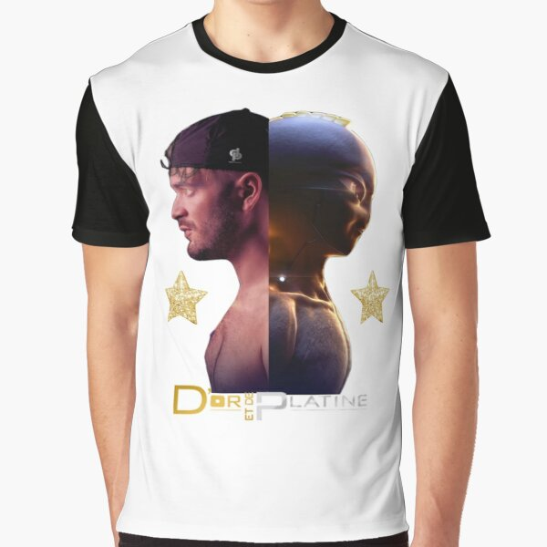
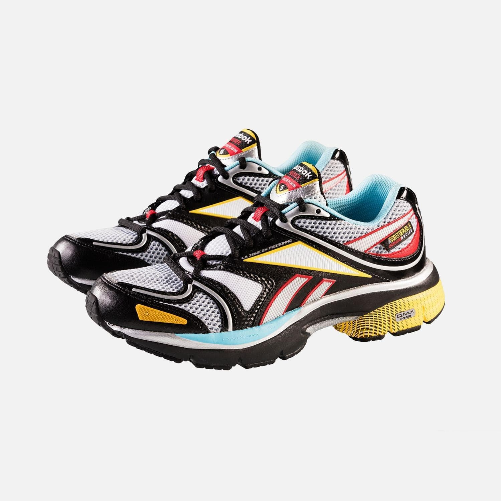
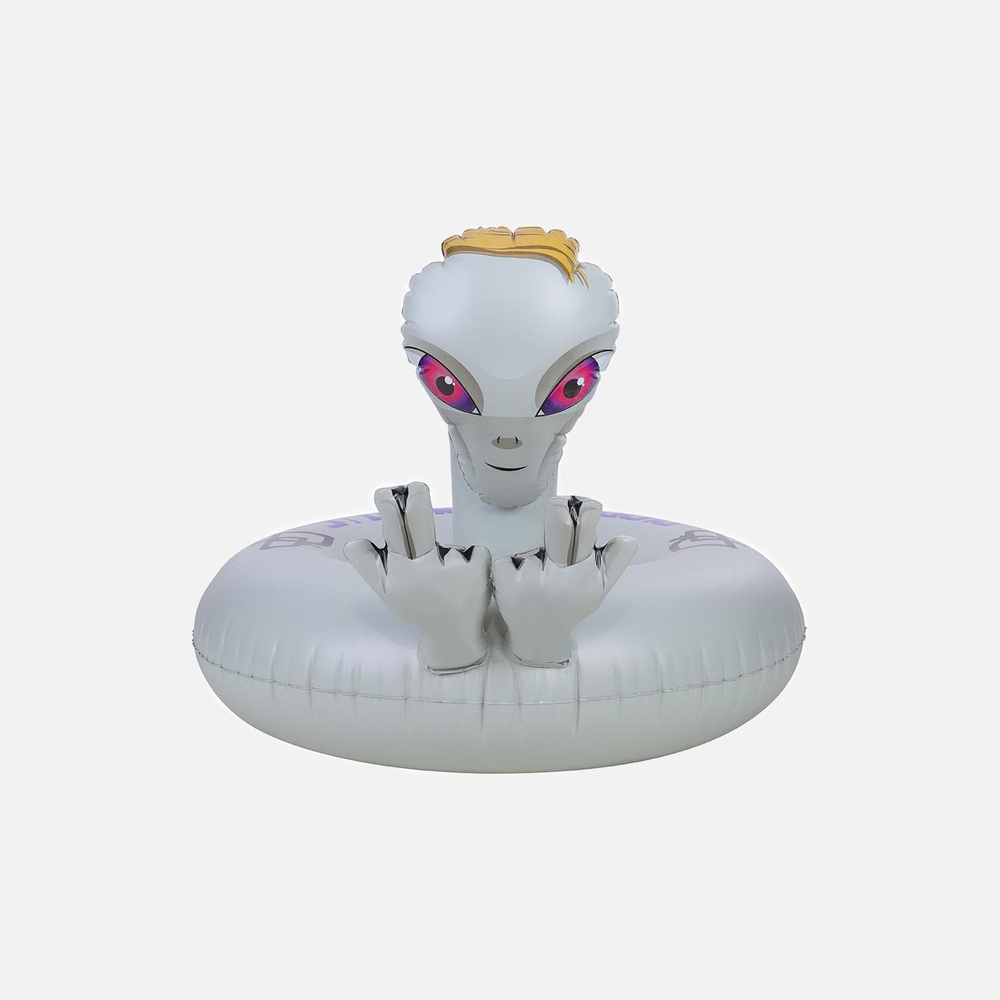

Julien Mari dit Jul est un rappeur, chanteur et auteur-compositeur-interprète français, né le 14 janvier 1990 dans le 12e arrondissement de Marseille. Il publie son premier single, Sort le cross volé, en novembre 2013 suivi en février 2014 d'un album entier, Dans ma paranoïa, le premier d'une série prolifique : deux albums complets par an depuis le début de sa carrière, tous certifiés au moins disque de platine. En 2015, Jul quitte le label Liga One Industry à la suite de désaccords financiers et fonde son propre label indépendant, D'or et de platine. En 2017, il reçoit la récompense du meilleur album de musique urbaine aux 32es Victoires de la musique pour l'album My World. En février 2020, il devient le plus gros vendeur de disque de l'histoire du rap français avec plus de quatre millions d'albums vendus à l'âge de 30 ans, et en six ans de carrière.
Jul est originaire de la cité Louis-Loucheur du quartier de Saint-Jean-du-Désert de Marseille. Il commence à rapper dès l'âge de 12 ans. De 14 à 16 ans, il fréquente La Commanderie, le centre de formation de l'Olympique de Marseille. À 17 ans, il est renvoyé de son établissement où il effectuait un BEP vente après trois mois de cours et commence à enchaîner des petits boulots puis à travailler avec son père dans des chantiers de construction de piscines. Sa première paie lui sert à s'offrir un micro et une carte son, tandis qu'un ordinateur lui a été fourni à son entrée au lycée. Il tient un an dans les chantiers avant d'arrêter, « traumatisé », et de se lancer à plein temps dans la musique. Il se met alors à produire des chansons sous le nom de « Juliano 135 », en recopiant des instrumentaux d'autres artistes, puis en chantant dessus. De ce fait, il est rapidement repéré par le label marseillais Liga One Industry. Adoptant le pseudonyme « Jul », il rejoint le groupe Ghetto Phénomène avec Veazy, Houari, Friz et Bil-K, tout en continuant à produire des chansons en solo.
Au lendemain de la sortie de son nouvel album "Extraterrestre", Jul a enflammé l'Orange Vélodrome de Marseille ce samedi 4 juin. Devant plus de 60.000 fans, l'ovni a retourné le stade le temps d'un concert évènement!Jul l'a fait, remplir le stade Vélodrome. Deux ans après la date initiale, l'ovni du rap francophone a réalisé son rêve : rapper sur la pelouse mythique de l'Olympique de Marseille. Le concert initialement prévu le 6 juin 2020 a dû être reporté à cause de la crise sanitaire liée au Covid et c'est finalement ce samedi 4 juin que l'interprète de "Bande Organisée" a atterri sur la scène depuis son Tmax volant. Devant une foule en délire de plus de 60.000 personnes, Jul a profité de cette date unique pour régaler son public : entrée de haute voltige, clips inédits ou encore morceau enregistré en live avec les fans, le J a donné un show presque parfait.
Cet incroyable artise connait beaucoup de suroms. Générallement piochés dans ses musiques et de ses paroles, Jul est comunément appelé Le J, l'Ovni, Ju-Ju-Jul, La Machine
Alors que son dernier album s'est vu certifier disque d'or et que Jul a récemment annoncé la création d'un nouveau label, Jul aimerait ouvrir une boutique en France. Bien entendu, sa communauté n'a pas attendu très longtemps avant de communiquer sa joie et son engouement face à cette proposition qui s'avère bien partie pour être prochainement concrétisée. Et bien qu'une boutique en ligne soit déjà disponible pour les plus grands fans de l'artiste, ce dernier a pour envie de se rapprocher au maximum de son public avec un magasin physique. Malgré tout, suite à cette annonce, les internautes non marseillais n'ont pas hésité à faire transparaître une certaine jalousie. Les fans de Jul vont-ils se mobiliser pour qu'une boutique soit lancée dans chacune de leur ville respective ? Il faut dire que ses followers sont très militants. Il y a quelques semaines, un de ses fans a déjà créé une pétition sur le site Change.org, pour que le signe emblématique que fait régulièrement le rappeur avec ses deux mains soit transposé en emoji. Dans cette boutique, on epu trouver de tout: ses collaborations, ses albums, des vetements, des dédicaces, des bouets...
  J’écoute du rap depuis quelques années déjà quand j’entends parler de Jul pour la première fois. On est en 2015 et mon copain de l’époque me le présente comme le chouchou des tipeus, cette nouvelle génération d’ados tête brûlée aux cheveux longs qui nous semble si éloignée de nous. À cette époque, nous voyageons dans le Sud-Est de la France d’où je suis originaire. À chaque coin de rue, au détour d’un scooter sur la béquille, un portable braille les instrus déroutantes du rappeur marseillais Non mais qu’est-ce que c’est que ces prods de l’espace ? Cette débauche d’auto-tune ? Et cette voix de canard asthmatique ? Nous arrivons à la conclusion que nos goûts en matière de hip-hop sont trop old school pour adhérer à ce qui prend déjà des allures de véritable phénomène. Je catalogue Jujul au rayon étoile filante commerciale, section beauf appliqué, et je l’oublie. Puis, il y a eu Tchikita. Certifié single de diamant à sa sortie en 2016, ce titre entêtant et romantique à sa façon devient vite l’hymne de nos soirées entre meufs. Je découvre la voix du Jul chanteur, une autre facette de son personnage, et mon amour naissant se transforme bientôt en obsession. Un an plus tard, le 7ème album studio m’offre Ma Jolie, une pépite dans la même veine mignonno-vulgos qui achève de me faire fondre. Depuis, Jul a engendré pas moins de 4 albums supplémentaires, dont le tout récent Rien 100 Rien, sorti ce 14 juin. Entre temps, j’ai saigné ses morceaux les plus sombres comme ses bangers les plus foufous, redécouvert J’oublie Tout, le fameux titre que les smartphones urbains crachaient en boucle en 2015, et fait de Jul mon coach musical officiel pendant mes sorties running. J’aurais pu rester au chaud chez les gens bien qui le dénigrent. J’aurais pu continuer à me galvaniser de mépris bobo, à le shamer pour sa grammaire douteuse et ses choix stylistiques hasardeux. Mais pour toutes les raisons que je vais t’exposer, j’ai choisi de l’aimer, absolument tel qu’il est. L’argot sudiste, le parler cash, les références au shit (spécialité régionale)… Tous les ingrédients sont réunis pour me donner le mal du pays. Jul porte fièrement son identité de zonard du soleil, le merce en bandoulière, cette traduction occitane de merci, devenue le cri de ralliement des fans. Le Sud colle à sa personnalité comme le legging d’une cagole. Avec Sch, Infinit’, Hoos ou encore Demi-Portion, celui qui est maintenant MON chouchou assure la renaissance du rap sur le littoral azuréen. Mon chauvinisme provincial est flatté, mon admiration piquée par un flow solide et des images inédites, et mon oreille se régale de cette nonchalance agressive des « grandes bouches » de chez moi. Jul ose n’être que ce qu’il est. Les snobs pourront pas comprendre, tant pis pour eux. Mélancolique, solitaire et invisible dans les médias, le rappeur de Marseille n’est pas venu faire dans le bling-bling. Enfermé dans son studio à domicile, il maintient un rythme de travail prolifique depuis ses débuts. À ses 11 albums (2 par an depuis 2014) s’ajoutent 6 autres opus gratuits, offerts en ligne à ses fans pour les remercier d’abord, mais aussi parce que son « inspi d’ailleurs » semble trop foisonnante pour être contenue. Je retrouve chez lui cette figure du rappeur hustler, de l’artisan qui a choisi de faire primer le travail sur l’emballage. Proche de ses fans avec lesquels il communique intensément sur les réseaux sociaux, il refuse la plupart des interviews et revendique son amour pour Kalenji, la marque basique de Décathlon. Certes, ces quelques chansons d’amour ne deviendront pas des hymnes féministes, mais son désir de rester lui-même a au moins le mérite de nous épargner des clips remplis de bombasses réifiées… Tout ce que les gens critiquent chez lui, c’est pour moi ce qui fait de Jul un artiste absolument unique, sensible, et profondément attachant, parce que tout simplement humain. Il n’y en a qu’un comme lui. Cette capacité à rester fidèle à lui-même, sa sincérité, forcent mon admiration. Le regard des autres ne semble avoir aucune prise sur lui. Sans chercher à se conformer, à imiter ou à anticiper ce qu’on attend de lui, Jul trace sa voie en électron libre. Voir quelqu’un réussir en faisant si peu de compromis, en affirmant un style aussi particulier, m’inspire et me donne de la force pour exprimer à mon tour qui je suis vraiment. Que ça plaise ou non, Jul est authentique, dans sa vérité même si elle divise, franc avant tout avec lui-même. Je crois que c’est cette honnêteté, qui ne peut être feinte, qui nourrit un succès que les tendances ne pouvaient prédire. J’ai dû me creuser pour vous intellectualiser cet amour naturel qui coule dans mes veines à chaque écoute. En vrai, je suis une femme, j’ai grandi à la campagne, bien trop au nord de Marseille pour pouvoir dire « dans le Sud », j’ai pas de potes en prison… Bien que nos réalités n’aient pas grand-chose à voir, Jul a su trouver le chemin de mon cœur, grâce à son talent. Parce qu’il ne joue pas de rôle, ses envolées sur l’amitié et l’amour, l’ambition et l’humilité, la confiance et la trahison peuvent résonner au creux de tous et toutes. Je comprends que le style puisse dérouter, je comprends qu’on puisse ne pas l’aimer. Mais aucune personne de bonne foi ne peut minimiser la justesse de son œuvre. Jul est un rappeur de ouf qui, parti du néant, a créé une galaxie qui n’appartient qu’à lui, un univers dont il est le seul astre. Riez de sa mèche, moquez son orthographe : vous n’empêcherez pas Jul d’écrire comme une machine et de rapper comme un prince. Je dois vous laisser, j’ai un 11ème album à écouter
En mai 2017, Jul est convoqué par la police pour avoir cité le nom d'un policier de la direction centrale de la Sécurité publique des Bouches-du-Rhône dans sa chanson L'Hiver au quartier où il rappe « Fuck les banal'. Jul supprime son titre d'Internet à la demande des enquêteurs. Le rappeur affirme également ne pas connaître le policier en question et ne pas avoir écrit ce passage, le morceau ayant été rédigé à quatre.
En juillet 2017, des habitants du quartier de Saint-Jean-du-Désert se plaignent des soirées organisées pour fêter les retours du rappeur dans la cité : ces soirées incluent des barbecues interdits, des bruits de scooters et de la musique à haut volume jusqu'à tard dans la nuit. Le maire du 3e secteur de Marseille, Bruno Gilles, rencontre Jul et lui propose de lui « prêter la Maison pour tous de Saint-Pierre quand il vient » à condition de ne pas troubler le sommeil des riverains et qu'il ne tourne plus de clips dans les rues du quartier. Le label de Jul répond aux critiques en disant qu'il n'y a « ni drogue ni violence » dans ces rassemblements : Jul a même signé des autographes à des policiers venus s'enquérir du tapage nocturne. Un membre du label critique les propos de Bruno Gilles, qui aurait déclaré « Avec les millions qu'il a, il ne peut pas les tourner ailleurs, ces clips sauvages ? ». La volonté affichée de Jul est d'offrir des produits dérivés aux enfants de la cité et de les rencontrer régulièrement « pour ne pas qu'ils tombent dans la délinquance », sans aucune communication de sa part auprès des médias.
Le 22 octobre 2017, le chanteur est arrêté par la brigade anti-criminalité et placé en garde à vue à Marseille pour avoir conduit à 160 km/h avec un passager armé à bord d'une voiture de location sur l'A50, en direction de Marseille. Le passager, un jeune homme de 24 ans, a tenté de dissimuler un pistolet de calibre 9 mm et une petite quantité de haschich. Le 24 octobre, Jul publie une déclaration d'excuses à destination de ses fans sur ses comptes Facebook et Twitter, affirmant qu'il ne veut pas donner le mauvais exemple et qu'il apprend de ses erreurs. Cependant, son message est truffé de fautes d'orthographe, ce qui entraîne de nombreuses moqueries. Jul publie une réponse à ces remarques : « Je suis parti de rien sans savoir écrire bien et ça n'est pas ça qui m'a empêché d'écrire des tubes ». Le lendemain de l'affaire, il publie une chanson gratuite intitulée Mauvaise journée.